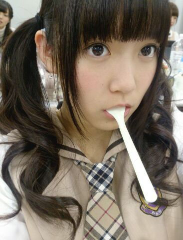

| 2013/12 27 Fri | ひめたん(*>ω<*)そ の387 |
真夏さんらぶ！

最近 真夏 (秋元真夏ちゃん)が異常にすき。
たんひめーって言って
ほっぺたぷにぷにしてくる真夏が
最近なんかすき。
あたし釣られてんのかな......悔しいな。
ずっきゅー｀・ω・´ーん
さて明日は全国握手会！
京都ですっ
行くよーってみなさんよろしくね☆
どうやら聞くところによると
幕張、名古屋の全国握手会
会場に入るまで寒かったらしいからねー
年末に風邪ひいたーとかなると
お正月楽しくないので
防寒対策よろしくお願いしますねほんとにね
握手のペアは
一億人の親戚ことカーキュリーこと
ずーさん (高山一実ちゃん)＊
ずーさんファンのみなさん
明日は仲良くしてくださったら嬉しいな
よろしくお願いします(＊^ω^＊)/
ひめきゅんさんもいつもありがとうねっ
明日は楽しくおしゃべりしましょーうね
ひめきゅんさん早く会いたいよーうぎうぎ
関西のみなさん おじゃまします！
遠征するみなさん どうかお気を付けて！
さてークリスマスは
乃木のの収録してきました！
文化放送をお聴きのみなさんは
新年一発目のオンエアです
ぜひ聴いてください☆
久々の乃木のの楽しかったー♪♪
終わってから
さゆ (井上小百合ちゃん)
万理華 (伊藤万理華ちゃん)と
クリスマスしてきました！
さゆにゃんじゃなくて
さゆって呼ぶことにしてみたの＊＊
写めはふたりの日記に飛んでみてねー
にゃー楽しかったー
まったりお話しました(〃ω〃)
さゆはスケジュール帳を買ってたでしょ？
ひめたんはイヤホンを買いました！
あ、ほら、ちょっと前に話してた
ヘッドホンももちろん可愛がってるんだけどね
あれって持ち運ぶのがちょっと大変なのね
だから今は使い分けてるのー
移動中にまったりする時はイヤホン
おうちでまったりする時はヘッドホンかなー
オムライスんまんま

オムライスはおいしいです
みなさんオムライスは好きですかー？
オムライスの美味しいお店知ってたら教えてねー
ひめたんは鉄板中の鉄板ではありますが
ポムの樹が好きです。んまんま

 ひめたんが参加してなくてやってみたい
ひめたんが参加してなくてやってみたい
乃木坂の歌ってある？？
「やさしさなら間に合ってる」
4thのカップリング曲なんですが
あの曲ほんとにだいすき！
でも、あのメンバー構成だからいいのかなー
次の春から一人暮らしになるのですが、
簡単に作れる料理ってありますか？
なんでしょうねー
サラダ味のお菓子にお湯入れてかき混ぜたら
あっという間にポテトサラダの完成だよーとか
別に考えてないけどさ。
生駒ちゃんにカンチョーされたらどうするの？
やっぱ無視？
お尻触ってきたりとかよくありますね
あわあわしちゃいます(((o(*゜▽゜*)o)))
ひめたんはカレーは甘口、中辛、辛口だったら
どの味が好きですか？
辛口は厳しいかなー
甘口もしくは中辛までセーフかな
いや、中辛は辛さによりけりって感じですかねー
(ヤンマガ)デザートはメンバーで
おいしくいただきましたって感じですか？
そーうですその通り！
スイーツだいすきメンバーだったので
撮影中も結構おいしくいただいておりました
あまりにカメラを意識しなさすぎて
「ほら！お仕事中！」って(´・ω・｀)
新幹線で隣に座ったいくちゃんに
ひめたんビームをすると、
いくちゃんは押し黙ってしまいますよね？
残念ながらひめたんはいくちゃんと
どうやら正反対みたいで
ひめたんは移動中はおとなしく休みたい人です
びーむとかしないんだよねー
そして移動中のいくちゃんに
ひめたんびーむごときで太刀打ち出来るわけが
にゃんこ様がとりりーぬさんを
食べちゃわないか心配で寝れません。
二人はもちろん仲良しですよね？
食べません！
おともだちだからとか以前に
猫さんは鳥さん食べてもうれしくないでしょ！
ブログのコメントは .全部見てるの ??
よくこーゆー質問いただきます
みてますよーいつもありがとうね(＊^ω^＊)
日記を書く前に過去の記事のコメントを
読むようにしてます♪
だからちゃーんとチェックしてるよっ
ひめたん、女子みたいな男子は好きですか？
中身がステキな人であれば
おとこのこ、おにゃのこ
どちらも好きです///
乃木坂ファミリーさんみんないい人(´；；｀)らぶ
ひめたんのブログの
コメント欄下２ケタに46を踏んだ方へ
手書きでコメ返するコーナー
＼ ひめたん46 ／

昨日は収録でした(＊^ω^＊)
１日休んだだけなのに
カラダって訛っちゃうもんみたいー
まったく恐ろしいもんですよー
あっ収録 楽しかったです♪♪
オムライス美味しかったっ
川後さんがひめたんの腕をホールドして
ひめたんの肩に頭を預けて寝息を立ててるよう
普段つんつんしてるおにゃのこが
ベタベタしてくれると
なんだかどきどきします。かわゆすうう
(＊´・ω・＊)
昨日は収録でした(＊^ω^＊)
１日休んだだけなのに
カラダって訛っちゃうもんみたいー
まったく恐ろしいもんですよー
あっ収録 楽しかったです♪♪
オムライス美味しかったっ
川後さんがひめたんの腕をホールドして
ひめたんの肩に頭を預けて寝息を立ててるよう
普段つんつんしてるおにゃのこが
ベタベタしてくれると
なんだかどきどきします。かわゆすうう
(＊´・ω・＊)
コメント(435)
2013/12/27 23:42